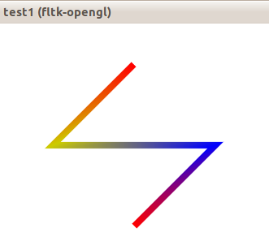

Vase Renderer
first draft, version 0.2 (draft1_2)About
Vase renderer(VaseR) is a 2D graphics renderer built on top of OpenGL. Unlike most graphics libraries which are based on SetPixel(), VaseR is based on glDrawArrays(). That means, VaseR takes the advantage of GPU rasterization.
Documentation
API design
VaseR is a renderer and merely translates input vectors into gl calls. VaseR has no states, only a set of functions. Thus you need to pass many parameters to a VaseR function on each call. And these parameters are stored in structures like WinAPI does. Normally if you do not know what options to set, just put 0 at the parameter polyline_opt*. VaseR ensures empty parameter polyline_opt* options=0 or empty structure polyline_opt opt={0}; are default options and would not cause any error.
Usage
You should provide these structs to VaseR before any vase_renderer_* include by:
struct Vec2 { double x,y;};
struct Color { float r,g,b,a;};
or
typedef your_vec2 Vec2;
typedef your_color Color;
#include "../include/vase_renderer_draft1_2.cpp"
The recommended way is to include "vase_renderer_draft1_2.cpp" .
You should not include "vector_operations.h" or "vertex_array_holder.h" directly. It may break things. They are included by "vase_renderer_draft1_2.cpp".
To compile "vase_renderer_draft1_2.cpp" separately, you should create an empty cpp file and define/ typedef the structs Vec2 and Color before "vase_renderer_draft1_2.cpp" as these structs are expected to be provided by you.
example:
//file vase_renderer.cpp
struct Vec2 { double x,y;};
struct Color { float r,g,b,a;};
#include "vase_renderer_draft1_2.cpp"
//end of file
polyline()void polyline(
Vec2* P, //pointer to array of point of a polyline
Color* C, //array of color
double* weight,//array of weight
int size_of_P, //size of the buffer P
polyline_opt* options) //extra options
optionsstruct polyline_opt
{ //set the whole structure to 0 will give default options
char joint;
#define LJ_miter 0
#define LJ_bevel 1
#define LJ_round 2
char cap;
bool feather;
double feathering;
bool no_feather_at_cap;
bool no_feather_at_core;
};
Usage
void sample_polyline()
{
int size_of_AP=4;
Vec2 AP[size_of_AP];
AP[0].x=200; AP[0].y=50;
AP[1].x=100; AP[1].y=150;
AP[2].x=300; AP[2].y=150;
AP[3].x=200; AP[3].y=250;
Color AC[size_of_AP];
{ Color col={1 , 0, 0, 1}; cc[0]=col;}
{ Color col={.8,.8, 0, 1}; cc[1]=col;}
{ Color col={ 0, 0, 1, 1}; cc[2]=col;}
{ Color col={1 , 0, 0, 1}; cc[3]=col;}
double Aw[size_of_AP];
Aw[0] = 8.0;
Aw[1] = 8.0;
Aw[2] = 8.0;
Aw[3] = 8.0;
polyline_opt opt={0};
polyline( AP, AC, Aw, size_of_AP, &opt);
}
glEnableClientState(GL_VERTEX_ARRAY); //]vertex and color is required by polyline()
glEnableClientState(GL_COLOR_ARRAY); //]
glDisableClientState(GL_NORMAL_ARRAY); //example only, manage your enabled states carefully
sample_polyline();
glDisableClientState(GL_VERTEX_ARRAY);
glDisableClientState(GL_COLOR_ARRAY);

NotesVarying color is stable but has some artifacts at degenerated cases.Varying weight is unstable. | |||||||||||||||||||||||||||